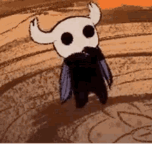
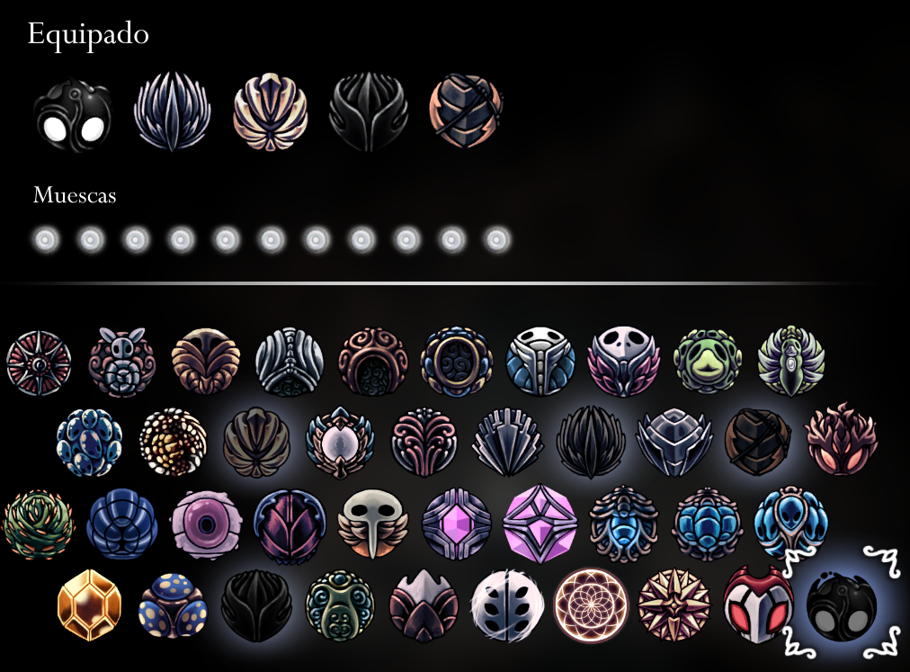

¿Que es Hollow Knight?

Hollow Knight es un videojuego de aventura y exploracion en 2D creado por Team Cherry y lanzado en 2017. Controlas a un pequeño caballero que desciende a Hallownest, un reino subterráneo de insectos en ruinas.
Aqui encontraras consejos para empezar y una ficha de los Jefes mas importantes, con su zona y una recomendacion para vencerlos.
Esta Guia no reemplaza a la wiki: usala como mapa de ruta.
CONSEJOS PARA EMPEZAR
- Curate solo cuando el enemigo este lejos. Puedes curarte hasta 3 veces con la vasija de alma(Excepto cuando mueres ya que la vasija se rompe y solo te podras curar una vez). Explorando el mapa puedes encontrar fragmentos para crear vasijas de almas
- Descansa en los bancos para guardar tus progreso, punto de reaparicion y curarte si te quedas sin alma
- Si mueres, tu sombra conserva tu GEO(Moneda del jugeo) y alma no utilizada: tras derrotarla podaras recuperar todo
- Compra el mapa de cada zona a Cornifer. Tambien podras conseguir la pluma y la brujula para poder guiarte y modificar el mapa mientras progresas
- Prueba distintos amuletos hasta encontrar tu estilo de combate. El conjunto para el combate cuerpo a cuerpo es:
- Corte Rápido
- Fuerza Irrompible
- Sombra Afilada
- Marca de Orgullo
